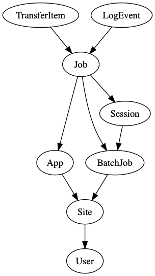
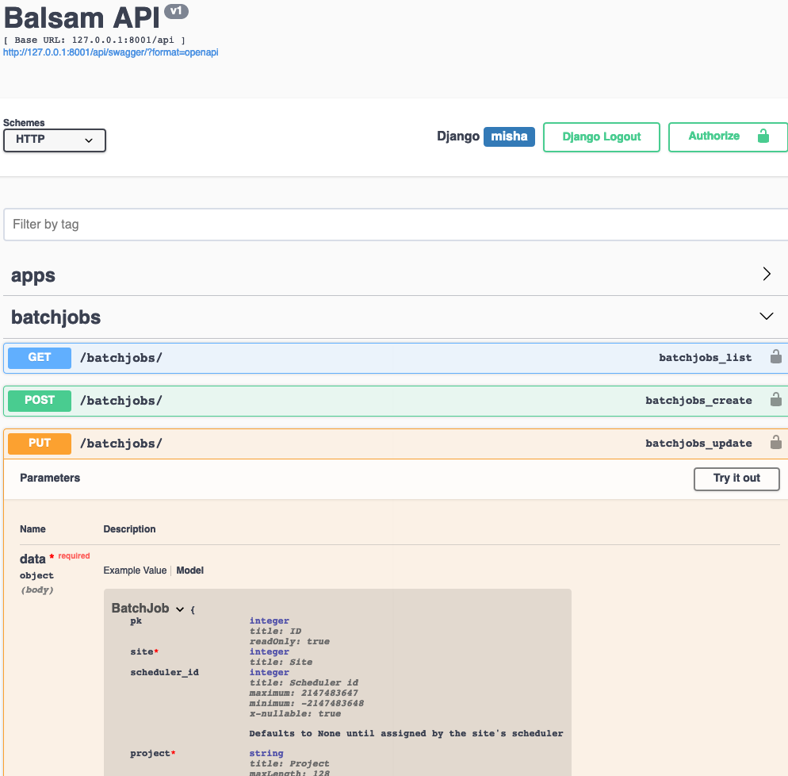

Understanding Balsam¶
Balsam is made up of:
- A centrally-managed, multi-tenant web application for securely curating HPC applications, authoring workflows, and managing high-throughput job campaigns across one or many computing facilities.
- Distributed, user-run Balsam Sites that sync with the central API to orchestrate and carry out the workflows defined by users on a given HPC platform.
In order to understand how Balsam is organized, one should first consider the server side entities. This graph shows the database schema of the Balsam application. Each node is a table in the database, represented by one of the model classes in the ORM. Each arrow represents a ForeignKey (or many-to-one) relationship between two tables.

The Database Schema¶
-
A
Userrepresents a Balsam user account. All items in the database are linked to a single owner (tenant), which is reflected in the connectivity of the graph. For example, to get all the jobs belonging tocurrent_user, join the tables viaJob.objects.filter(app__site__user=current_user) -
A
Sitemust have a globally uniquenamewhich corresponds to a directory on some machine. One user can own several Balsam sites located across one or several machines. Each site is an independent endpoint where applications are registered, data is transferred in and out, and Job working directories are located. Each Balsam site runs a daemon on behalf of the user that communicates with the central API. If a user has multiple active Balsam Sites, then a separate daemon runs at each of them. The authenticated daemons communicate with the central Balsam API to fetch jobs, orchestrate the workflow locally, and update the database state. -
An
Apprepresents a runnable application at a particular Balsam Site. Every Balsam Site contains anapps/directory with Python modules containingApplicationDefinitionclasses. The set ofApplicationDefinitionsdetermines the applications which may run at the Site. AnAppinstance in the data model is merely a reference to anApplicationDefinitionclass, uniquely identified by the Site ID and class path. -
A
Jobrepresents a single run of anAppat a particularSite. TheJobcontains both application-specific data (like command line arguments) and resource requirements (like number of MPI ranks per node) for the run. It is important to note that Job-->App-->Site are non-nullable relations, so aJobis always bound to run at a particularSitefrom the moment its created. Therefore, the corresponding Balsam service daemon may begin staging-in data as soon as aJobbecomes visible, as appropriate. -
A
BatchJobrepresents a job launch script and resource request submitted by theSiteto the local workload manager (e.g. Slurm). Notice that the relation ofBatchJobtoSiteis many-to-one, and thatJobtoBatchJobis many-to-one. That is, manyJobsrun in a singleBatchJob, and manyBatchJobsare submitted at aSiteover time. -
The
Sessionis an internal model representing an active Balsam launcher session.Jobshave a nullable relationship toSession; when it is not null, the job is said to be locked by a launcher, and no other launcher should try running it. The Balsam session API is used by launchers acquiring jobs concurrently to avoid race conditions. Sessions contain a heartbeat timestamp that must be periodically ticked to maintain the session. -
A
TransferItemis created for each stage-in or stage-out task associated with aJob. This permits the transfer module of the Balsam service to group transfers according to the remote source or destination, and therefore batch small transfers efficiently. When all the stage-inTransferItemslinked to aJobare finished, it is considered "staged-in" and moves ahead to preprocessing. -
A
LogEventcontains atimestamp,from_state,to_state, andmessagefor each state transition linked to aJob. The benefit of breaking a Job's state history out into a separate Table is that it becomes easy to query for aggregate throughput, etc... without having to first parse and accumulate timestamps nested inside aJobfield.
The REST API¶
Refer to the interactive document located under the /docs URL of your Balsam server for detailed information about each endpoint. For instance, launch a local server with docker-compose up and visit localhost:8000/docs.

User & a note on Auth¶
Generally, Balsam will need two types of Auth to function:
- Login auth: This will likely be an pair of views providing an OAuth flow, where Balsam redirects the user to an external auth system, and upon successful authentication, user information is redirected back to a Balsam callback view. For testing purposes, basic password-based login could be used instead.
- Token auth: After the initial login, Balsam clients need a way to
authenticate subsequent requests to the API. This can be performed with
Token authentication and a secure setup like Django REST
Knox. Upon successful
login authentication (step 1), a Token is generated and stored (encrypted)
for the User. This token is returned to the client in the login response.
The client then stores this token, which has some expiration date, and
includes it as a HTTP header on every subsequent request to the API (e.g.
Authorization: Token 4789ac8372...). This is both how Javascript web clients and automated Balsam Site services can communicate with the API.
Summary of Endpoints¶
| HTTP Method | URL | Description | Example usage |
|---|---|---|---|
| GET | /sites/ | Retrieve the current user's list of sites | A user checks their Balsam site statuses on dashboard |
| POST | /sites/ | Create a new Site | balsam init creates a Site and stores new id locally |
| PUT | /sites/{id} | Update Site information | Service daemon syncs backfill_windows periodically |
| DELETE | /sites/{id} | Delete Site | User deletes their Site with balsam rm site |
| ----------- | --------------- | -------------------- | ------------------- |
| GET | /apps/ | Retrieve the current user's list of Apps | balsam ls apps shows Apps across sites |
| POST | /apps/ | Create a new App |
balsam app sync creates new Apps from local ApplicationDefinitions |
| PUT | /apps/{id} | Update App information |
balsam app sync updates existing Apps with changes from local ApplicationDefinitions |
| DELETE | /apps/{id} | Delete App |
User deletes an App; all related Jobs are deleted |
| ----------- | --------------- | -------------------- | ------------------- |
| GET | /jobs/ | Get paginated Job lists, filtered by site, state, tags, BatchJob, or App | balsam ls |
| POST | /jobs/ | Bulk-create Jobs |
Create 1k jobs with single API call |
| PUT | /jobs/{id} | Update Job information |
Tweak a single job in web UI |
| DELETE | /jobs/{id} | Delete Job |
Delete a single job in web UI |
| PUT | /jobs/ | Bulk-update Jobs: apply same update to all jobs matching query | Restart all jobs at Site X with tag workflow="foo" |
| PATCH | /jobs/ | Bulk-update Jobs: apply list of patches job-wise | Balsam StatusUpdater component sends a list of status updates to API |
| ----------- | --------------- | -------------------- | ------------------- |
| GET | /batch-jobs/ | Get BatchJobs | Web client lists recent BatchJobs |
| POST | /batch-jobs/ | Create BatchJob | Web client or ElasticQueue submits a new BatchJob |
| PUT | /batch-jobs/{id} | Alter BatchJob by ID | Web client alters job runtime while queued |
| DELETE | /batch-jobs/{id} | Delete BatchJob by ID | User deletes job before it was ever submitted |
| PATCH | /batch-jobs/ | Bulk Update batch jobs by patch list | Service syncs BatchJob states |
| ----------- | --------------- | -------------------- | ------------------- |
| GET | /sessions | Get Sessions List | BatchJob Web view shows "Last Heartbeat" for each running |
| POST | /sessions | Create new Session |
Launcher JobSource initialized |
| POST | /sessions/{id}/acquire | Acquire Jobs for launcher | JobSource acquires new jobs to run |
| PUT | /sessions/{id} | Tick Session heartbeat |
JobSource ticks Session periodically |
| DELETE | /sessions/{id} | Destroy Session and release Jobs |
Final JobSource release() call |
| ----------- | --------------- | -------------------- | ------------------- |
| GET | /transfers/ | List TransferItems |
Transfer module gets list of pending Transfers |
| PUT | /transfers/{id} | Update TransferItem State |
Transfer module updates status |
| PATCH | /transfers/ | Bulk update TransferItems via patch list |
Transfer module bulk-updates statuses of finished transfers |
| ----------- | --------------- | -------------------- | ------------------- |
| GET | /events | Fetch EventLogs | Web client filters by Job tags and last 24 hours to get a quick view at throughput/utilization for a particular job type |
Site¶
| Field Name | Description |
|---|---|
id |
Unique Site ID |
name |
The unique site name like theta-knl |
path |
Absolute POSIX path to the Site directory |
last_refresh |
Automatically updated timestamp: last update to Site information |
creation_date |
Timestamp when Site was created |
owner |
ForeignKey to User model |
globus_endpoint_id |
Optional UUID: setting an associated endpoint for data transfer |
num_nodes |
Number of compute nodes available at the Site |
backfill_windows |
JSONField: array of [queue, num_nodes, wall_time_min] tuples indicating backfill slots |
queued_jobs |
JSONField: array of [queue, num_nodes, wall_time_min, state] indicating currently queued and running jobs |
optional_batch_job_params |
JSONField used in BatchJob forms/validation {name: default_value}. Taken from site config. |
allowed_projects |
JSONField used in BatchJob forms/validation: [ name: str ] |
allowed_queues |
JSONField used in BatchJob forms/validation: {name: {max_nodes, max_walltime, max_queued}} |
transfer_locations |
JSONField used in Job stage-in/stage-out validation: {alias: {protocol, netloc}} |
App¶
| Field Name | Description |
|---|---|
id |
Unique App ID |
site |
Foreign Key to Site instance containing this App |
name |
Short name identifying the app. |
description |
Text description (useful in generating Web forms) |
name |
Name of ApplicationDefinition class |
parameters |
Command line template or function parameters. A dict of dicts with the structure: {name: {required: bool, default: str, help: str}} |
transfers |
A dict of stage-in/stage-out slots with the structure: {name: {required: bool, direction: ["in"|"out"], target_path: str, help: str}} |
The App model is used to merely index the ApplicationDefinition classes
that a user has registered at their Balsam Sites.
The parameters field represents "slots" for each adjustable command line parameter.
For example, an ApplicationDefinition command template of
"echo hello, {{first_name}}!" would result in an App having the parameters list:
[ {name: "first_name", required: true, default: "", help: ""} ]. None of the Balsam
site components use App.parameters internally; the purpose of mirroring this field in
the database is simply to facilitate Job validation and create App-tailored web forms.
Similarly, transfers mirrors data on the ApplicationDefinition for
Job input and validation purposes only.
For security reasons, the
validation of Job input parameters takes place in the site-local ApplicationDefinition
module. Even if a malicious user altered the parameters field in the API, they would not
be able to successfully run a Job with injected parameters.
Job¶
| Field Name | Description |
|---|---|
id |
Unique Job ID |
workdir |
Working directory, relative to the Site data/ directory |
tags |
JSON {str: str} mappings for tagging and selecting jobs |
session |
ForeignKey to Session instance |
app |
ForeignKey to App instance |
parameters |
JSON {paramName: paramValue} for the App command template parameters |
batch_job |
ForeignKey to current or most recent BatchJob instance in which this Job ran |
state |
Current state of the Job |
last_update |
Timestamp of last modification to Job |
data |
Arbitrary JSON data storage |
return_code |
Most recent return code of job |
parents |
Non-symmetric ManyToMany Parent --> Child relations between Jobs |
num_nodes |
Number of compute nodes required (> 1 implies MPI usage) |
ranks_per_node |
Number of ranks per node (> 1 implies MPI usage) |
threads_per_rank |
Number of logical threads per MPI rank |
threads_per_core |
Number of logical threads per hardware core |
launch_params |
Optional pass-through parameters to MPI launcher (e.g -cc depth) |
gpus_per_rank |
Number of GPUs per MPI rank |
node_packing_count |
Maximum number of instances that can run on a single node |
wall_time_min |
Lower bound estimate for runtime of the Job (leaving at default 0 is allowed) |
Let workdir uniqueness be the user's problem. If they put 2 jobs with same workdir, assume it's intentional. We can ensure that "stdout" of each job goes into a file named by Job ID, so multiple runs do not collide.
A user can only access Jobs they own. The related App, BatchJob, and parents
are included by ID in the serialized representation. The session is excluded
since it is only used internally. Reverse relationships (one-to-many) with
transfers and events are also not included in the Job representation, as
they can be accessed through separate API endpoints.
The related entities are represented in JSON as follows:
| Field | Serialized | Deserialized |
|---|---|---|
id |
Primary Key | Fetch Job from user-filtered queryset |
app_id |
Primary Key | Fetch App from user-filtered queryset |
batch_job_id |
Primary Key | Fetch BatchJob from user-filtered queryset |
parent_ids |
Primary Key list | Fetch parent jobs from user-filtered queryset |
transfers |
N/A | Create only: Dict of {transfer_item_name: {location_alias: str, path: str}} |
events |
N/A | N/A |
session |
N/A | N/A |
transfers are nested in the Job for POST only: Job creation is an atomic transaction grouping addition of the Job with its related TransferItems.
The API fetches the related App.transfers and Site.transfer_locations to validate each transfer item:
transfer_item_namemust match one of the keys inApp.transfers, which determines thedirectionand local path- The
location_aliasmust match one of the keys inSite.transfer_locations, which determines theprotocolandremote_netloc - Finally, the remote path is determined by the
pathkey in eachJobtransfer item
BatchJob¶
| Field Name | Description |
|---|---|
id |
Unique ID. Not to be confused with Scheduler ID, which is not necessarily unique across Sites! |
site |
ForeignKey to Site where submitted |
scheduler_id |
ID assigned by Site's batch scheduler (null if unassigned) |
project |
Project/allocation to be charged for the job submission |
queue |
Which scheduler queue the batchjob is submitted to |
num_nodes |
Number of nodes requested for batchjob |
wall_time_min |
Wall time, in minutes, requested |
job_mode |
Balsam launcher job mode |
optional_params |
Extra pass-through parameters to Job Template |
filter_tags |
Restrict launcher to run jobs with matching tags. JSONField dict: {tag_key: tag_val} |
state |
Current status of BatchJob |
status_info |
JSON: Error or custom data received from scheduler |
start_time |
DateTime when BatchJob started running |
end_time |
DateTime when BatchJob ended |
Every workload manager is different and there are numerous job states
intentionally not considered in the BatchJob model, including starting,
exiting, user_hold, dep_hold, etc. It is the responsibility of the
site's Scheduler interface to translate real scheduler states to one of the few
coarse-grained Balsam BatchJob states: queued, running, or finished.
Session¶
| Field Name | Description |
|---|---|
id |
Unique ID |
heartbeat |
DateTime of last session tick API call |
batch_job |
Non-nullable ForeignKey to BatchJob this Session is running under |
Sessioncreation only requires providingbatch_job_id.Sessiontick has empty payloadSessionacquire endpoint uses a specialJobAcquireSerializerrepresentation:
| Field | Description |
|---|---|
states |
list of states to acquire |
max_num_acquire |
limit number of jobs to acquire |
filter_tags |
filter Jobs for which job.tags contains all {tag_name: tag_value} pairs |
node_resources |
Nested NodeResource representation placing resource constraints on what Jobs may be acquired |
order_by |
order returned jobs according to a set of Job fields (may include ascending or descending num_nodes, node_packing_count, wall_time_min) |
The nested NodeResource representation is provided as a dict with the structure:
{
"max_jobs_per_node": 1, # Determined by Site settings for each Launcher job mode
"max_wall_time_min": 60,
"running_job_counts": [0, 1, 0],
"node_occupancies": [0.0, 1.0, 0.0],
"idle_cores": [64, 63, 64],
"idle_gpus": [1, 0, 1],
}
TransferItem¶
| Field Name | Description |
|---|---|
id |
Unique TransferItem ID |
job |
ForeignKey to Job |
protocol |
globus or rsync |
direction |
in or out. If in, the transfer is from remote_netloc:source_path to Job.workdir/destination_path. If out, the transfer is from Job.workdir/src_path to remote_netloc:dest_path. |
remote_netloc |
The Globus endpoint UUID or user@hostname of the remote data location |
source_path |
If stage-in: the remote path. If stage-out: the local path |
destination_path |
If stage-in: the local path. If stage-out: the remote path. |
state |
pending -> active -> done or error |
task_id |
Unique identifier of the Transfer task (e.g. Globus Task UUID) |
transfer_info |
JSONField for Error messages, average bandwidth, transfer time, etc... |
There is no create (POST) method on the /transfers endpoint, because TransferItem creation is directly linked with Job creation. The related Transfers are nested in the Job representation when POSTING new jobs. The following fields are fixed at creation time: |
idjobprotocoldirectionremote_netlocsource_pathdest_path
For list (GET), the representation includes all fields. job_id represents the Job by primary key.
For update (PUT and PATCH), only state, task_id, and transfer_info may be modified. The update of a state to done triggers a check of the related Job's transfers to determine whether the job can be advanced to STAGED_IN.
LogEvent¶
| Field Name | Description |
|---|---|
id |
Unique ID |
job |
ForeignKey to Job undergoing event |
timestamp |
DateTime of event |
from_state |
Job state before transition |
to_state |
Job state after transition |
data |
JSONField containing {message: str} and other optional data |
For transitions to or from RUNNING, the data includes nodes as a fractional
number of occupied nodes. This enables clients to generate throughput and utilization views without having to fetch entire related Jobs.
This is a read only-API with all fields included. The related Job is represented by primary key job_id field.